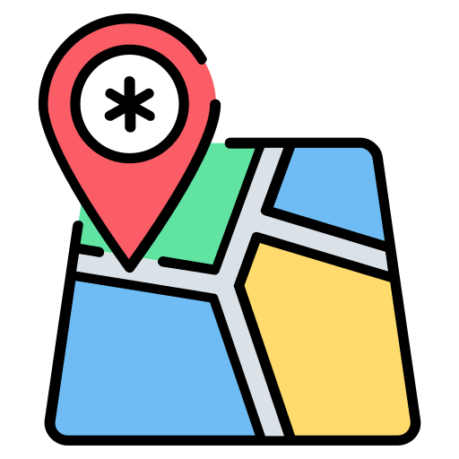
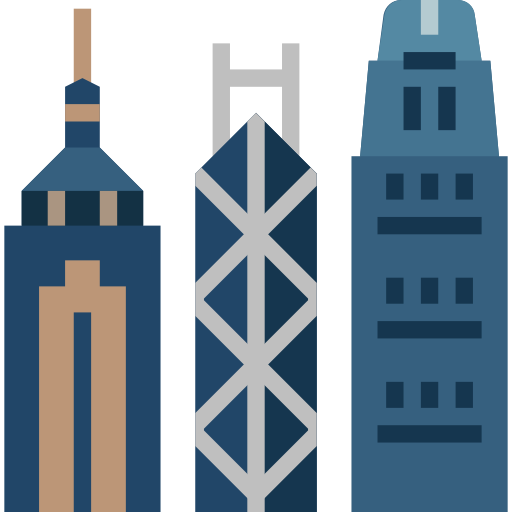
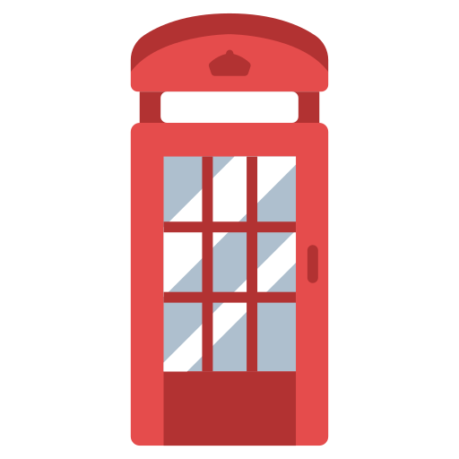
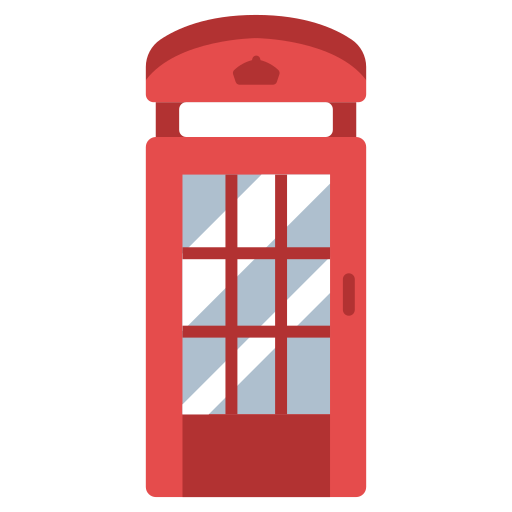

Hi, I'm Guy
This is My Travel Blog! 
About Me.
Hi, my name is Guy Levy. I am 43 years old QA Junior from Tel Aviv.
QA is my biggest passion, but I also love exploring the world.
As a former flight attendant, I was fortunate to explore stunning cities worldwide. I'm excited to introduce you to the cities that have captured my heart. Let's explore together!
 Bangkok.
The best city in the world!
A vibrant, chaotic metropolis where ancient temples stand tall amidst towering skyscrapers. A sensory overload of bustling markets, delicious street food, and friendly smiles. A city that never sleeps, offering endless entertainment and cultural experiences.
Things I loved doing in Bangkok:
Boat River Sightseeing
Bangkok, the City of Angels, is best experienced from the water. A boat ride along the Chao Phraya River offers a unique perspective of the city that you simply can't get by land. Many popular attractions are located along the river, making it a convenient way to explore the city.
Motorbiking in Bangkok
For everyday transportation, the most popular vehicle in Bangkok is the motorcycle. They are practical, efficient, and can navigate the city's traffic with ease. But when you do so, please take into cosiderations traffic congestions, air pollution, safety concerns, and helmet laws.
MBK Center
MBK Center (formerly Mah Boon Khrong Center) is a massive shopping mall located in the heart of Bangkok. It's one of the oldest and largest shopping centers in the city. MBK Center blew me away! The amazing deals, authentic feel, fantastic food choices, and perfect location made it an unforgettable shopping adventure.
Hong Kong.
Hong Kong, a dynamic metropolis, seamlessly blends ancient traditions with modern innovation. Known for its towering skyscrapers, bustling markets, and delicious cuisine, Hong Kong offers a unique and unforgettable experience.
Things I loved doing in Hong Kong:
Star Ferry
A classic way to experience the city's skyline from the harbor. The Star Ferry transported me back in time, offered me a genuine Hong Kong experience, it was so beautiful.
Lan Kwai Fong
It's Hong Kong's lively nightlife district. I discovered a diverse range of bars, clubs, and restaurants to suit every taste and mood. I enjoyed the sounds of local and international musicians performing live.
Street Food Markets
Hong Kong is a food lover's paradise, and its bustling food markets are where the magic happens. These vibrant hubs offer a tantalizing array of local delicacies and international flavors. There are Wet markets which offer seafood and meat, Cooked food markets, and Night markets.
London. 

London is a vibrant, cosmopolitan city that offers something for everyone. From its rich history and iconic landmarks to its world-class arts and culture scene, there's always something to discover.
Things I loved doing in London:
London's iconic Telephone Booths
London's iconic red telephone booths are more than just functional structures; they're symbols of the city's rich history and culture. While they might not be as essential for communication as they once were, they remain a beloved part of London's landscape and offer a unique opportunity to connect with the city's past.
Red London Bus
The red London bus is a world-renowned symbol of the city. It's a double-decker bus, meaning it has two levels: the lower deck and the upper deck. The distinctive red color has become synonymous with London. The Double-decker design Offers a unique sightseeing experience from the upper deck. The ride on the London bus was amazing! I loved seeing the city from the top deck.
Big Ben
Big Ben is one of the most recognizable symbols of London and the United Kingdom. Big Ben is actually the nickname for the Great Bell within the clock tower at the north end of the Palace of Westminster in London.The tower itself is officially called Elizabeth Tower.
New York.
New York City is a global icon, pulsating with energy and offering an unparalleled experience. From the Empire State Building and the Statue of Liberty to Central Park and Times Square, the city is packed with world-famous sights.
Things I loved doing in New York:
Central Park
Central Park is a sprawling urban oasis located in the heart of Manhattan, New York City. It's one of the most famous parks in the world and a beloved destination for locals and tourists alike. Jogging in Central Park was amazing!
Manhattan Bridge
The Manhattan Bridge is a suspension bridge that spans the East River, connecting Lower Manhattan with Downtown Brooklyn. It's one of the four major bridges linking the two boroughs, and it's known for its impressive architecture and stunning views.
Times Square
Times Square is a major commercial intersection, tourist destination, entertainment center, and neighborhood in the Midtown Manhattan section of New York City. It is best known for its bright lights, large electronic billboards, and crowds of pedestrians. I had the pleasure to experience the world-famous ball drop and join millions in celebrating the start of a new year!
NY Times Square - Welcoming 2010!

NY Times Square - Welcoming 2010!
Contact Me.
I'd love to hear your thoughts on my Travel Blog!
© Guy Levy 2024 - All rights reserved.
Powered by w3.css
Globe icons created by Freepik - Flaticon